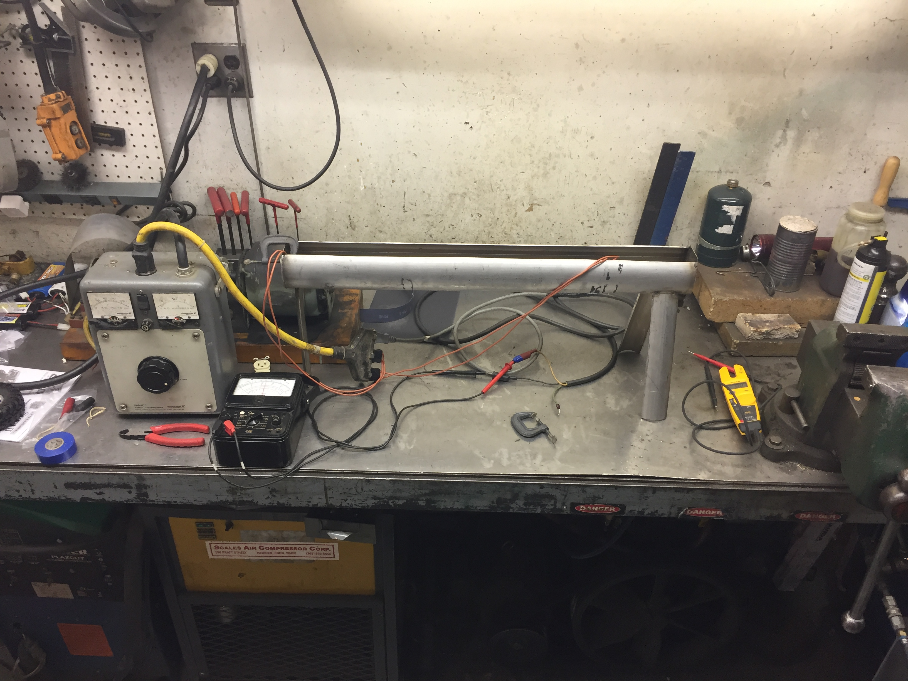
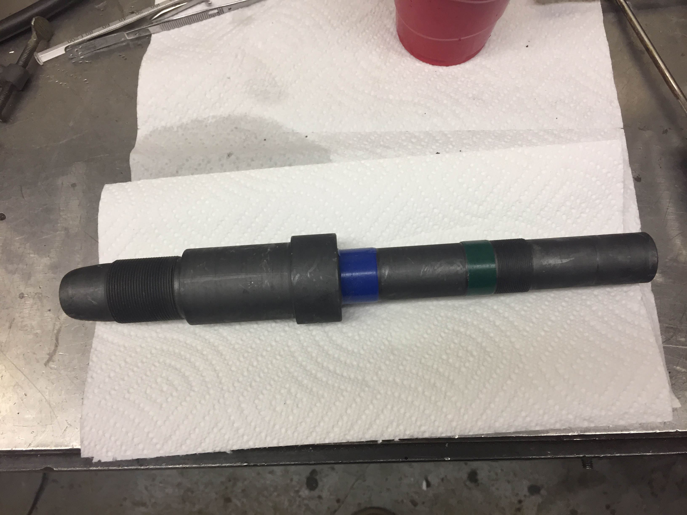

Parkerizing Setup
Summer 2019
An excellent corrosion-resistant steel conversion coating

The tank. The Variac is to vary the power delivered to the heaters.
Parkerizing is a phosphate conversion coating for steel that consists of submersion of a steel part in a heated tank of dilute Phosphoric Acid with a salt of Manganese or Zink (I used manganese). The steel reacts with the acid, locally raising the pH of the solution right at the surface of the steel, causing the Manganese salt to drop out of solution and form microscopic crystals on the surface of the steel. The Manganese Phosphate is highly corrosion-resistant and fairly tough, and it is porus enough to absorb oils or paint to provide even more protection. It also gives a nice, clean-looking surface, even if the original surface had visible imperfections.

An example part that I parkerized. It was originally bare steel.
The solution must be heated to about 180 deg F so I built a stainless steel tank from a section of stainless tube that I cut the top off and then welded some sheet stainless onto the ends. I added a valve to drain the solution as well. On different runs I used strip heaters or cartridge heaters to heat the solution. The strip heaters worked pretty well, but were a mess and took up a lot of tank space. The cartridge heaters did not work at all, because the heat was way too concentrated and this caused lots of local boiling and for a heavy, almost ceramic-type buildup on the heaters. The next plan is to use a long propane burner to provide even heating across the whole bottom of the tank.